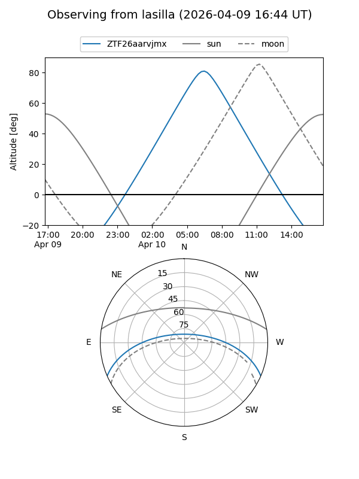
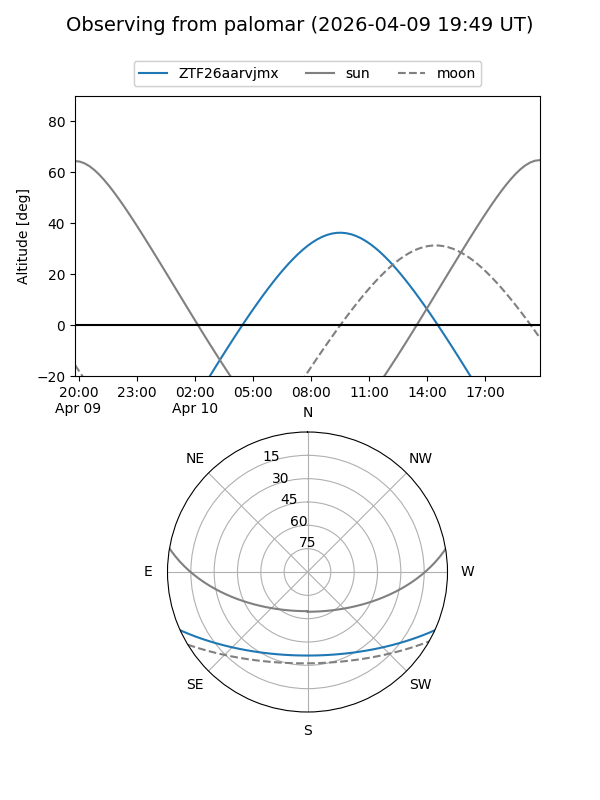

ZTF26aarvjmx
Target ZTF26aarvjmx at 2026-04-10 09:31
Aliases and brokers:
FINK: link
Lasair: link
ALeRCE: link
alt names
ZTF26aarvjmx (ztf,fink_ztf)
Coordinates:
equatorial (ra, dec) = 223.8926,-20.24338
equatorial (HMS+DMS) = 14:55:34.23,-20:14:36.15
galactic (l, b) = (338.5754,+33.89855)
Flags:
Photometry:
last ztfg=19.77, ztfr=19.92
1 ztfg, 1 ztfr detections
Lightcurve
Visibility


Additional plots